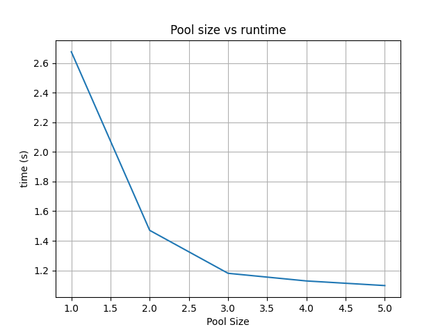

Python - Multiprocessing
| Author(s) |
  Helena Rasche Helena Rasche
|
| Editor(s) |
 Donny Vrins Donny Vrins Bazante Sanders Bazante Sanders |
OverviewQuestions:
Objectives:
How can I parallelize code to make it run faster
What code is, or is not, a prime target for parallelisation
Requirements:
Understanding how to paralellise code to make it run faster.
Identifying how to decompose code into a parallel unit.
Time estimation: 30 minutesLevel: Advanced AdvancedSupporting Materials:Last modification: Feb 13, 2023License: Tutorial Content is licensed under Creative Commons Attribution 4.0 International License. The GTN Framework is licensed under MITShort Link: https://gxy.io/GTN:T00095
Best viewed in a Jupyter NotebookThis tutorial is best viewed in a Jupyter notebook! You can load this notebook one of the following ways
Run on the GTN with JupyterLite (in-browser computations)
Launching the notebook in Jupyter in Galaxy
- Instructions to Launch JupyterLab
- Open a Terminal in JupyterLab with File -> New -> Terminal
- Run
wget https://training.galaxyproject.org/training-material/topics/data-science/tutorials/python-multiprocessing/data-science-python-multiprocessing.ipynb- Select the notebook that appears in the list of files on the left.
Downloading the notebook
- Right click one of these links: Jupyter Notebook (With Solutions), Jupyter Notebook (Without Solutions)
- Save Link As..
AgendaIn this tutorial, we will cover:
Threads vs Processes
For many languages, threads can be extremely efficient, as they are rather light weight and don’t require many resources to create new threads. “Threads are cheap”. However Python has a major limitation with the Global Interpreter Lock (GIL). Only one thread can be executing at once, whether it’s the main thread, or one of the others you’ve spawned. So we look to alternative concurrency mechanisms like processes for sharing the load across multiple CPU cores.
For threads, if you are doing “lightweight” work like fetching data from the web where a lot of time is spent waiting for the server to respond, but very little computational work within Python is required, then threads are a great fit!
However if you are doing computationally intensive work (imagine calculating prime numbers or similar complex tasks) then each thread will be contending for CPU time. Python is a single processes and can only have one thread running at a time due to the GIL. So it will switch between multiple threads and try and make progress on each, but it cannot execute them truly simultaneously. Here we need to switch to processes.
Processes are relatively heavier weight as they essentially start a new python process, before executing the individual function. This is part of the reason for a “Pool”, to amortise the expensive cost of setting up processes, before allowing them to do a lot of work quickly. Here each process can be using it’s own CPU core fully, and thus make more sense for computationally expensive tasks.
Let’s dive straight into an example: here we’re using the multiprocessing library which uses processes and is relatively simple to understand:
from multiprocessing import Pool
Importantly we should define a pure function, i.e. a function that only works on the inputs available to it, and doesn’t use or affect global state (i.e. without side effects). (printing is ok.)
def f(x):
return x * x
We spawn a process Pool, with 5 processes And then use the convenient map
function to send inputs multiply to the specified function f
with Pool(5) as p:
print(p.map(f, range(10)))
This will create 5 new python processes, and they will begin to consume tasks from the queue as quickly as they can. As soon as a process has finished handling one task, it will begin work on the next task.
Pools & Paralellism
Let’s do another example, the classic “print time”, to see how the threads are actually executing across 4 processes.
import time
def g(x):
print(time.time())
time.sleep(1)
with Pool(4) as p:
print(p.map(g, range(12)))
QuestionWhat did you see here?
Was it clear and easy to read?
It prints four timestamps immediately, all around the same time. Then one second later it prints 4 more, and one second later, a final four. Our Pool of 4 processes processes the function the maximal amount of times possible concurrently. Once each of those functions returns, then it can move on to processing the next tasks. This is precisely the situation of e.g. 4 queues at the grocery; as soon as one customer is processed, they immediately begin on the next, until no more remain.
You might also see a situation where the numbers are interleaved in a completely unreadable way. Here they write immediately, but there is no synchronisation or limiting on who can write at one time, and the result is a mess of interleaved print statements.
When to parallelise
Some guidelines:
- When you can isolate a pure function
- That do not require shared state, nor ordering
- That do not modify global state (pure!)
- That take a significant amount of time, relative to the time it takes to rewrite your code to support parallelising.
Some common examples of this are slow tasks like requesting data from multiple websites, e.g. using the requests library. Or doing some computationally expensive calculation. The last point however is especially important, as it is not always trivial to rearchitect your code to handle being spread across multiple threads or processes.
Let’s parallelize this program which fetches some metadata from multiple Galaxy servers:
import requests
import time
servers = [
"https://usegalaxy.org",
"https://usegalaxy.org.au",
"https://usegalaxy.eu",
"https://usegalaxy.fr",
"https://usegalaxy.be",
]
data = {}
start = time.time()
for url in servers:
print(url)
try:
response = requests.get(url + "/api/version", timeout=2).json()
data[url] = response['version_major']
except requests.exceptions.ConnectTimeout:
data[url] = None
except requests.exceptions.ReadTimeout:
data[url] = None
# How long did it take to execute
print(time.time() - start)
for k, v in data.items():
print(k, v)
If we look at this, we can see one hot spot in the code, where it’s quite slow, requesting data from a remote server. If we want to speed this up we’ll need to isolate it into a pure function. Here we can see a possibility for a function that requests the data, with the input of the server url, and output of the version.
def fetch_version(server_url):
try:
response = requests.get(url + "/api/version", timeout=2).json()
return response['version_major']
except requests.exceptions.ConnectTimeout:
return None
except requests.exceptions.ReadTimeout:
return None
This now lacks side effects (like modifying the data object), and can be used in a map statement.
start = time.time()
with Pool(4) as p:
versions = p.map(fetch_version, servers)
data = dict(zip(servers, versions))
print(time.time() - start)
for k, v in data.items():
print(k, v)
Same result, and now this is a lot more efficient!
Sizing your Pool
This depends largely on profilling your code or knowing the performance characteristics of it. In the above example, there is very little computation work executed as part of this function, it’s essentially all network I/O, no CPU or memory usage.
As such, we can probably set our pool size to be very large, a multiple of our systems’ processor count. It will spawn many processes that do very little.
If however this were a more complicated task (e.g. calculating a large number, machine learning, etc.), then we might wish to set our pool size to the number of CPUs - 1, as each process will potentially consume it’s CPU allocation completely, and we wish to have some left over for the managing program and any other work going on, on the system.
QuestionTry changing the pool size and see what effect it has on runtime. Start from a value of 1, and go up to 5, the number of servers in our list.
Given the small sample size (5 servers), and the variability of response times (in local testing between 3-8 seconds for the single-pool version), you can see varying results but generally it should decrease as the pool size increases. However, sometimes you will see the Pool=5 version take the same or longer than Pool=4.
Especially in the case that 1 server (or 1 request one time) dominates the request time, this can “hide” the improvements as the others complete quickly on the remaining N-1 processes.
results = []
for i in range(1, 6):
start = time.time()
with Pool(i) as p:
versions = p.map(fetch_version, servers)
data = dict(zip(servers, versions))
duration = time.time() - start
results.append(duration)
# Plot it
import matplotlib.pyplot as plt
fig, ax = plt.subplots()
ax.plot(range(1, 6), results)
ax.set(ylabel='time (s)', xlabel='Pool Size', title='Pool size vs runtime')
ax.grid()
# Uncomment if your notebook cannot display images inline.
# fig.savefig("pool-vs-runtime.png")
plt.show()
You might see a result similar to the following:

Threads
Let’s convert our previous example from processes to threads, as processes aren’t strictly necessary for such a light weight use case as fetching data from the internet where you’re blocking on network rather than CPU resources.
import concurrent.futures
import requests
import time
data = {}
start = time.time()
with concurrent.futures.ThreadPoolExecutor(max_workers=4) as executor:
future_to_url = {executor.submit(fetch_version, url): url for url in servers}
for future in concurrent.futures.as_completed(future_to_url):
url = future_to_url[future]
try:
version = future.result()
data[url] = version
except Exception as exc:
print('%r generated an exception: %s' % (url, exc))
print(time.time() - start)
for k, v in data.items():
print(k, v)
This is a bit more complicated to write, but again, if you’re not blocking on CPU resources, then this is potentially approximately as effecient as thread pools.
QuestionWhat result did you get? Was it slower, faster, or about the same as processes?
Key points
Code go brrrt.
Frequently Asked Questions
Have questions about this tutorial? Check out the FAQ page for the Foundations of Data Science topic to see if your question is listed there. If not, please ask your question on the GTN Gitter Channel or the Galaxy Help ForumGlossary
- GIL
- Global Interpreter Lock
Feedback
Did you use this material as an instructor? Feel free to give us feedback on how it went.
Did you use this material as a learner or student? Click the form below to leave feedback.

Citing this Tutorial
- Helena Rasche, Python - Multiprocessing (Galaxy Training Materials). https://training.galaxyproject.org/training-material/topics/data-science/tutorials/python-multiprocessing/tutorial.html Online; accessed TODAY
- Batut et al., 2018 Community-Driven Data Analysis Training for Biology Cell Systems 10.1016/j.cels.2018.05.012
@misc{data-science-python-multiprocessing, author = "Helena Rasche", title = "Python - Multiprocessing (Galaxy Training Materials)", year = "", month = "", day = "" url = "\url{https://training.galaxyproject.org/training-material/topics/data-science/tutorials/python-multiprocessing/tutorial.html}", note = "[Online; accessed TODAY]" } @article{Hiltemann_2023, doi = {10.1371/journal.pcbi.1010752}, url = {https://doi.org/10.1371%2Fjournal.pcbi.1010752}, year = 2023, month = {jan}, publisher = {Public Library of Science ({PLoS})}, volume = {19}, number = {1}, pages = {e1010752}, author = {Saskia Hiltemann and Helena Rasche and Simon Gladman and Hans-Rudolf Hotz and Delphine Larivi{\`{e}}re and Daniel Blankenberg and Pratik D. Jagtap and Thomas Wollmann and Anthony Bretaudeau and Nadia Gou{\'{e}} and Timothy J. Griffin and Coline Royaux and Yvan Le Bras and Subina Mehta and Anna Syme and Frederik Coppens and Bert Droesbeke and Nicola Soranzo and Wendi Bacon and Fotis Psomopoulos and Crist{\'{o}}bal Gallardo-Alba and John Davis and Melanie Christine Föll and Matthias Fahrner and Maria A. Doyle and Beatriz Serrano-Solano and Anne Claire Fouilloux and Peter van Heusden and Wolfgang Maier and Dave Clements and Florian Heyl and Björn Grüning and B{\'{e}}r{\'{e}}nice Batut and}, editor = {Francis Ouellette}, title = {Galaxy Training: A powerful framework for teaching!}, journal = {PLoS Comput Biol} Computational Biology} }
Funding
These individuals or organisations provided funding support for the development of this resource

A number of our employees contribute directly to the Galaxy Training Network and seek to make our higher education learning materials more accessible to a wider audience through the GTN platform. avans.nl
Go FurtherDo you want to extend your knowledge? Follow one of our recommended follow-up trainings:
Galaxy Administrators: Install the missing toolsYou can use Ephemeris's
shed-tools installcommand to install the tools used in this tutorial.shed-tools install [-g GALAXY] [-a API_KEY] -t <(curl https://training.galaxyproject.org/training-material/api/topics/data-science/tutorials/python-multiprocessing/tutorial.json | jq .admin_install_yaml -r)Alternatively you can copy and paste the following YAML
--- install_tool_dependencies: true install_repository_dependencies: true install_resolver_dependencies: true tools: []